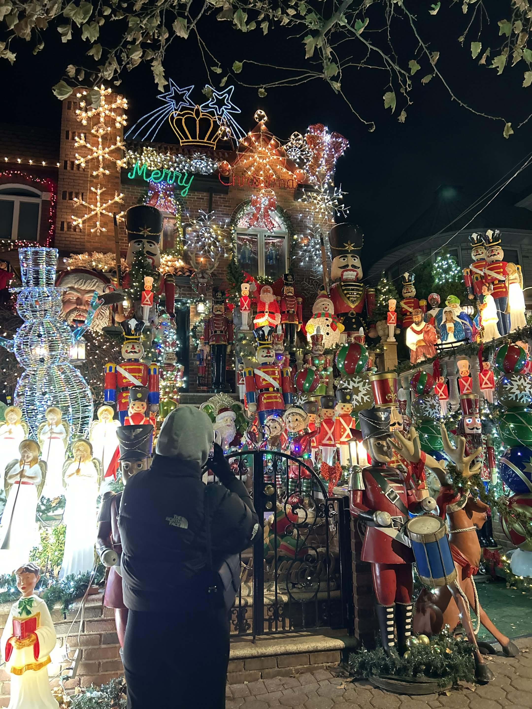

Welcome to the unofficial website for Dyker Heights Christmas Lights! Every winter, Dyker Heights transforms into one of the most dazzling holiday destinations in New York City. Homeowners throughout the neighborhood go all out with elaborate light displays, larger-than-life nutcrackers, and festive decorations that draw visitors from all over the world. What started as friendly neighborhood competition has grown into a beloved Brooklyn tradition, lighting up the streets each December with holiday magic.

Our goal here is to provide insight into the history and significance of the Dyker Heights Christmas Lights, as well as providing information via. Interactive Map for both locals and tourists to find the best light displays in the neighborhood!